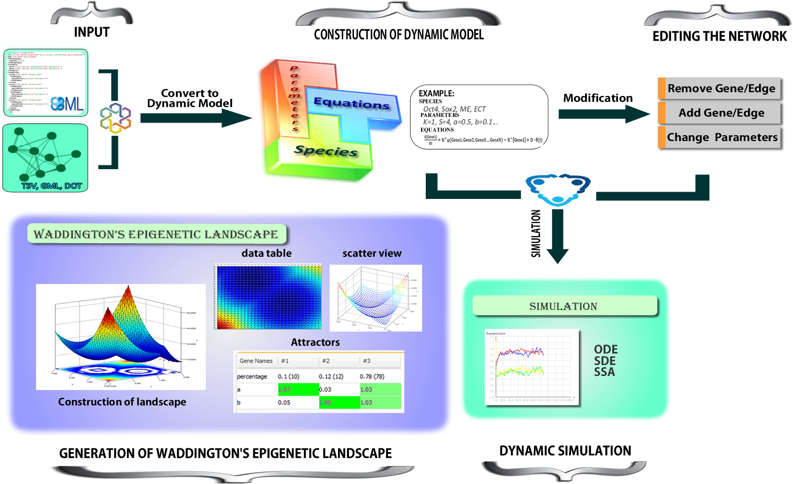

NetLand is designed for modeling and simulating the kinetic dynamics of transcriptional regulatory networks.
The global system dynamics which determine cell state transition are abstracted from transcriptional regulations and visualized in Waddington's epigenetic landscape. It provides flexible simulation methods and landscape implementations, i.e. probabilistic landscape representing the stability of cells. The landscape can be visualized by mapping to two marker genes or a two-dimensional latent space by using a dimension reduction method, GPDM.
The software NetLand is written in Java, with a graphical user interface (GUI). The source code and additional resources are available at GitHub.
Implements:
Dynamic modeling
Time-course simulation
Visualization of system dynamics in Waddington's epigenetic landscape

Screencast:
Please send your suggestions, comments, reports of bugs and errors to Jie Zheng. Thank you!